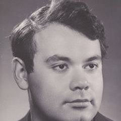

1938'de Leningrad'da doğan ve 2013'te Saint Petersburg'da ölen Aleksei German, sansür ve mükemmeliyetçiliği nedeniyle yalnızca bir avuç film yaptı. Trial on the Road (1971), 1985'e kadar yasaklı kaldı ve ardından Twenty Days Without War (1976) ve 1930'larda bir taşra kasabasındaki yaşamın portresi My Friend Ivan Lapshin'i (1984) yaptı. Khrustalyov, My Car! (1998) sonrasında, ölümünden sonra oğlu Aleksei German Jr. tarafından tamamlanan ve 2013'te gösterime giren, ortaçağ gezegeninin kirli, uzun planlı bir vizyonu olan Hard to Be a God üzerinde on yıldan fazla çalıştı.
Filmografi
- Trial on the Road (1971)
- Twenty Days Without War (1976)
- My Friend Ivan Lapshin (1984)
- Khrustalyov, My Car! (1998)
- Hard to Be a God (2013)